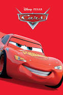
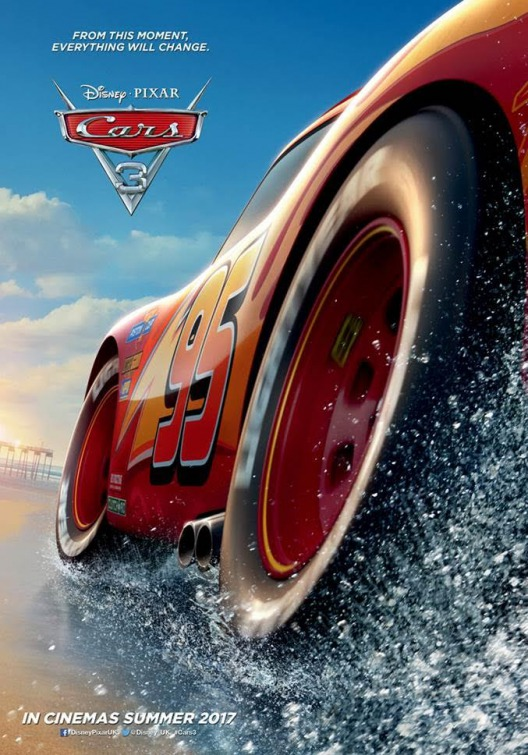

Cars

El aspirante a campeón de carreras Rayo McQueen parece que está a punto de conseguir el éxito. Su actitud arrogante se desvanece cuando llega a una pequeña comunidad olvidada que le enseña las cosas importantes de la vida que había olvidado. (Cuando se procese el drive se colocará la película completa).
Cars 2

Rayo McQueen y la grúa Mate viajan al extranjero para participar en el primer Campeonato Mundial en el que se decidirá cuál es el coche más rápido de la tierra. Mate se convertirá en un espía secreto y McQueen competirá contra los mejores coches. (Cuando se procese el drive se colocará la película completa).
Cars 3

Eclipsado por los autos jóvenes, el veterano Rayo McQueen ha sido expulsado del deporte que tanto ama. Sin embargo, no se rendirá tan fácilmente, con la ayuda de sus amigos, Rayo aprende trucos nuevos para vencer al arrogante Jackson Storm, el rival que lo humilló. (Cuando se procese el drive se colocará la película completa).